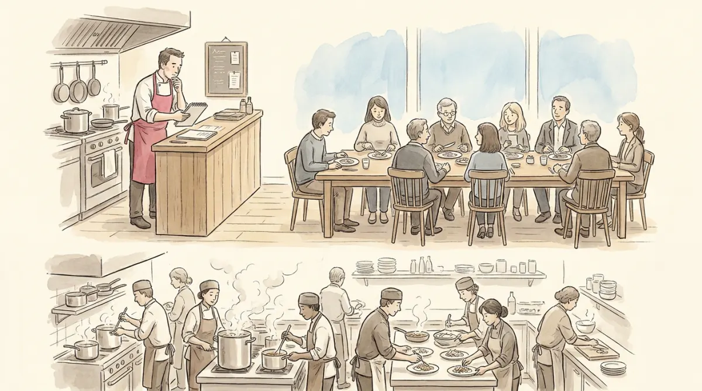

Picture government as a restaurant. The chef decides tonight's menu, sets the pace, and answers for the whole house: that is the executive, deciding, implementing, coordinating. At the long table sits the dining committee, elected by the town: they approve the menu, taste everything, question the chef in public, and can, in some restaurants, fire the chef on the spot: that is the legislature. And behind the pass works the kitchen brigade, who actually cook every plate, tonight and every night, whoever the chef happens to be: the bureaucracy.
The course's question for this lecture is not "what are these three things" but how the balance among them has shifted. Spoiler, visible from the street: the chef's name keeps getting bigger on the sign.
Poli-05 drew separation of powers as clean boxes. This lecture's correction: the boxes are allocated specific functions plus the responsibility to check each other, and none can do its job without the others. Legislation, the body of laws debated and passed by the legislature, requires in the classic formula that executive and legislative power agree. In real life the powers are mixed: executives draft most bills, legislatures amend and ratify, courts interpret what both meant. More than separation of power, the machine is separated institutions sharing powers, a partnership neither partner can leave.
And the partnership is tilting. The course flags a key trend: the weakening of legislatures: executive orders and decrees produce legislation that escapes parliamentary scrutiny, referendums route around the assembly (recall Poli-07 will detail them), and plebiscitarian populist leadership, amplified by technology, speaks straight to the crowd over the committee's heads (Poli-11 will name this move precisely).
Why do executives everywhere, in every wiring, keep gaining ground? The slides list the engines; the exam asked for them, verbatim: "What explains the growing predominance of the Executive over the other fundamental powers of the State? Provide and discuss at least three reasons" (2 points each, 6 total). Click through all six, then pick your favorite three:
Government complexity and emergency powers. Modern governing is technical (pandemics, financial crises, energy grids) and crises demand speed. Five hundred diners cannot debate a fire in the kitchen; the chef acts, and each emergency leaves the chef holding a little more of the ladle. Discussable example: COVID-era decree governance across Europe.
Organisational resources. The executive owns the building: ministries, staff, data, expertise, the drafting pens. A part-time committee of generalists faces a full-time professional apparatus, and the side that writes the first draft frames every debate after it.
Delegated legislation. Parliaments increasingly pass framework laws and delegate the details to the executive: decrees, regulations, implementing acts. Each delegation is sensible; the sum is law-making migrating from the table to the pass, unscrutinised.
Media power. Cameras love a face, not a committee. The chef gives one interview and reaches more people than a month of table deliberations; personalisation of politics concentrates attention, and attention is power (Poli-10 dissects this machinery).
Party discipline. In parliamentary systems especially: when the head of government is also the majority party's leader, the deputies who could check the chef owe their seats and careers to the chef's party list. The watchdog is on the payroll.
International constraints. EU councils, treaties, summits: international politics is executive politics. Deals are struck between chefs in Brussels and delivered home as faits accomplis for the table to ratify.
The tide is not a coup. Executives still fall: impeachment in presidential systems, losing the confidence of the assembly in parliamentary ones, plus courts and public opinion. The exam nuance: the predominance is a trend with counter-forces, not an accomplished fact.
Four functions, and the course wants all four nameable:
| Representation | Bringing the electorate's will, its voice, into the building: interest aggregation and articulation. Imperfectly: parliaments skew professional, and representation itself has become a career. |
|---|---|
| Legitimation | The quiet function: because elected representatives passed it, the law binds even those who hated it. The assembly launders raw power into authority (Poli-01's currency exchange). |
| Law-making | Debating, amending, passing bills: the shuttle between chambers, the real work happening in legislative committees and hearings, not the theatrical plenary. |
| Scrutiny of the executive | The inspection function, with a whole toolbox: examining government bills in committee, interpellations and question time, veto powers, approval of appointments, and the heavy weapons: no-confidence votes and impeachment. |
Memory hook at the table: the committee speaks for the town (representation), blesses the menu (legitimation), writes the house rules (law-making), and inspects the chef (scrutiny).
Weber returns with a different hat. The modern state, he observed, built permanent bureaucracies to support governments, and the ideal type has three signatures:
Then the pathologies, each the shadow of a virtue: formalism and rigidity (the recipe followed off a cliff), over-regulation and over-specialisation, group-think, and the human fact that bureaucrats hold private preferences and interests (careers, budgets, politics) which can bend the cooking. Worst case: the spoils system and clientelism, jobs handed for loyalty, the exact disease merit recruitment exists to cure.
The official story: governments make policy, bureaucracies carry out routine implementation. The course's correction: the division is blurred. A rule applied is a rule interpreted; ten thousand small kitchen decisions add up to policy nobody voted for. The slides call the extreme the "dictatorship of the official". Politicians push back with political appointments at the top of ministries (which re-opens the spoils door), and reformers push New Public Management: running the kitchen like a private restaurant, with targets, competition, and performance pay. The honest summary for the exam: policy-making and implementation are two ends of one continuous process, and power lives at both ends.
"Discuss the role of bureaucracies in the government of public affairs": define the Weberian ideal (2 points: merit, specialisation, procedure), then discuss implementation-as-power, pathologies, and control mechanisms (appointments, NPM), one paragraph each. Close: "implementation is never merely technical."
Which function of parliament? Which engine of executive rise? Which kitchen pathology?
| The trio | executive decides and coordinates · legislature represents and checks · bureaucracy implements |
| Real separation | separated institutions sharing powers; neither can legislate alone; powers are mixed in practice |
| Rise of the executive (6) | complexity & emergency powers · organisational resources · delegated legislation · media power · party discipline · international constraints |
| Counterweights | impeachment · loss of confidence · courts · opinion |
| Legislature's 4 functions | representation (voice) · legitimation · law-making (committees!) · scrutiny (question time, interpellations, no-confidence) |
| Weakening of legislatures | decrees bypassing scrutiny · referendums · plebiscitarian leadership |
| Weber's ideal bureaucracy | merit recruitment · division of labor/specialisation · standardised procedures |
| Pathologies | rigidity, formalism, over-specialisation, group-think, private interests, spoils/clientelism |
| Implementation | blurred with policy-making ("dictatorship of the official"); controls: political appointments, New Public Management |
One restaurant: the chef grows, the table shrinks, the kitchen endures.
Six questions in the written test's style.